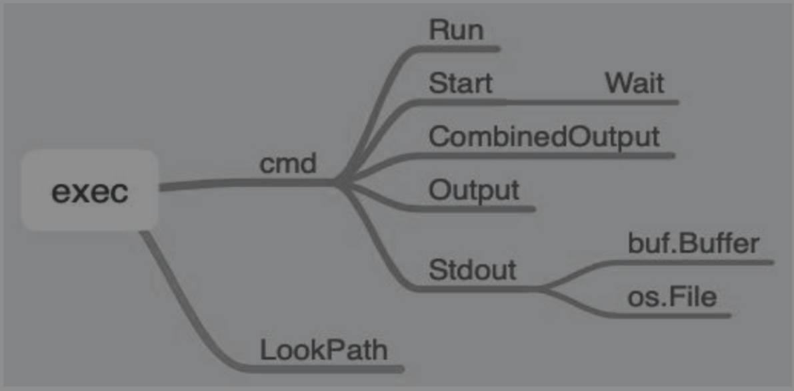

Contents
10.8. os/path/filepath¶
10.8.1. 1.os¶
常见的关于操作系统的操作是文件系统的操作，比如读取目录、改变目录、创建文件、文件内容读取等。
绝大多数操作系统都是类UNIX操作系统，所以其文件系统也是类UNIX的文件信息。Linux就是类UNIX操作系统中的一种。Linux文件包含很多标识信息，比如所属组、属主、所属其他用户等。
Linux操作系统还提供了更改属性的相应操作。
chgrp：更改文件属组。
chown：更改文件属主。
chmod：更改文件的9个属性。
r：代表权限数字4。
w：代表权限数字2。
x：代表权限数字1。
比如更改文件属性：
func Getwd() (dir string, err error)
func Chdir(dir string) error
func Chmod(name string, mode FileMode) error
func Chown(name string, uid, gid int) error
内置库关于文件属性（读、写、可执行）的定义如下：
const (
// Exactly one of O_RDONLY, O_WRONLY, or O_RDWR must be specified.
O_RDONLY int = syscall.O_RDONLY // open the file read-only.
O_WRONLY int = syscall.O_WRONLY // open the file write-only.
O_RDWR int = syscall.O_RDWR // open the file read-write.
// The remaining values may be or'ed in to control behavior.
O_APPEND int = syscall.O_APPEND // append data to the file when writing.
O_CREATE int = syscall.O_CREAT // create a new file if none exists.
O_EXCL int = syscall.O_EXCL // used with O_CREATE, file must not exist.
O_SYNC int = syscall.O_SYNC // open for synchronous I/O.
O_TRUNC int = syscall.O_TRUNC // truncate regular writable file when opened.
)
1.1 文件操作¶
对于文件和目录的操作，Go主要在os 提供了的相应函数：
func Mkdir(name string, perm FileMode) error
func Chdir(dir string) error
func TempDir() string
func Rename(oldpath, newpath string) error
func Chmod(name string, mode FileMode) error
func Open(name string) (*File, error) {
return OpenFile(name, O_RDONLY, 0)
}
func Create(name string) (*File, error) {
return OpenFile(name, O_RDWR|O_CREATE|O_TRUNC, 0666)
}
func OpenFile(name string, flag int, perm FileMode) (*File, error) {
testlog.Open(name)
return openFileNolog(name, flag, perm)
}
对文件的操作，常用的还是关于文件的读写。
type File
func Create(name string) (file *File, err error)
func Open(name string) (file *File, err error)
func OpenFile(name string, flag int, perm FileMode) (file *File, err error)
func NewFile(fd uintptr, name string) *File
func Pipe() (r *File, w *File, err error)
func (f *File) Name() string
func (f *File) Stat() (fi FileInfo, err error)
func (f *File) Fd() uintptr
func (f *File) Chdir() error
func (f *File) Chmod(mode FileMode) error
func (f *File) Chown(uid, gid int) error
func (f *File) Readdir(n int) (fi []FileInfo, err error)
func (f *File) Readdirnames(n int) (names []string, err error)
func (f *File) Truncate(size int64) error
func (f *File) Read(b []byte) (n int, err error)
func (f *File) ReadAt(b []byte, off int64) (n int, err error)
func (f *File) Write(b []byte) (n int, err error)
func (f *File) WriteString(s string) (ret int, err error)
func (f *File) WriteAt(b []byte, off int64) (n int, err error)
func (f *File) Seek(offset int64, whence int) (ret int64, err error)
func (f *File) Sync() (err error)
func (f *File) Close() error
可以看出，File具备Write和Read方法。
//io库的两个基本接口为Reader和Writer。
type Reader interface {
Read(p []byte) (n int, err error)
}
type Writer interface {
Write(p []byte) (n int, err error)
}
因为接口Writer和Reader分别具有Write和Read方法，所以File实现了接口Writer和Reader。
在日常开发中，关于文件的读写经常调用ioutil库中的ReadFile和WriteFile函数。阅读源代码可以发现，其实底层就是在调用os.File相关的操作。
// ReadFile reads the named file and returns the contents.
// A successful call returns err == nil, not err == EOF.
// Because ReadFile reads the whole file, it does not treat an EOF from Read
// as an error to be reported.
func ReadFile(name string) ([]byte, error) {
f, err := Open(name)
if err != nil {
return nil, err
}
defer f.Close()
var size int
if info, err := f.Stat(); err == nil {
size64 := info.Size()
if int64(int(size64)) == size64 {
size = int(size64)
}
}
size++ // one byte for final read at EOF
// If a file claims a small size, read at least 512 bytes.
// In particular, files in Linux's /proc claim size 0 but
// then do not work right if read in small pieces,
// so an initial read of 1 byte would not work correctly.
if size < 512 {
size = 512
}
data := make([]byte, 0, size)
for {
if len(data) >= cap(data) {
d := append(data[:cap(data)], 0)
data = d[:len(data)]
}
n, err := f.Read(data[len(data):cap(data)])
data = data[:len(data)+n]
if err != nil {
if err == io.EOF {
err = nil
}
return data, err
}
}
}
内置的bufio、ioutil和os库都支持文件的读写。
1.2 示例-文件操作¶
func OsUsage() {
// 判断文件是否存在，获取文件信息
fileMode, err := os.Stat("log.log")
if os.IsNotExist(err) {
return
}
fmt.Println(fileMode.Name(), fileMode.Mode(), fileMode.Size())
}
func OSUsageWith() {
// 创建文件，并以追加的方式写入内容
file, _ := os.OpenFile("os.log", os.O_APPEND|os.O_CREATE|os.O_WRONLY, 0644)
fmt.Println(file.Name())
file.WriteString("Hello")
file.WriteString("HelloWorld")
ioutil.ReadFile("os.log")
}
内置了打开和创建文件的两种快速操作：os.Open和os.Create，底层其实是os.OpenFile。
func Open(name string) (*File, error) {
return OpenFile(name, O_RDONLY, 0)
}
func Create(name string) (*File, error) {
return OpenFile(name, O_RDWR|O_CREATE|O_TRUNC, 0666)
}
1.3 示例-三种读取文件方式的比较¶
file.Read 方式读文件
bufio 方式读文件
ioutil 方式读文件
package main
import (
"bufio"
"fmt"
"io"
"io/ioutil"
"os"
"time"
)
/*
file.Read 方式读文件
*/
func read1(path string) {
fi, err := os.Open(path)
if err != nil {
panic(err)
}
defer fi.Close()
buf := make([]byte, 1024)
for {
n, err := fi.Read(buf)
if err != nil && err != io.EOF {
panic(err)
}
if 0 == n {
break
}
}
}
/*
bufio方式读文件
*/
func read2(path string) {
fi, err := os.Open(path)
if err != nil {
panic(err)
}
defer fi.Close()
r := bufio.NewReader(fi)
buf := make([]byte, 1024)
for {
n, err := r.Read(buf)
if err != nil && err != io.EOF {
panic(err)
}
if 0 == n {
break
}
}
}
/*
ioutil方式读文件
*/
func read3(path string) {
fi, err := os.Open(path)
if err != nil {
panic(err)
}
defer fi.Close()
_, err = ioutil.ReadAll(fi)
}
func main() {
file := "D:\\go_studay\\go_path\\src\\github.com\\medallion42\\IO操作\\system.log"
start := time.Now()
read1(file)
t1 := time.Now()
fmt.Printf("Cost time %v\n", t1.Sub(start))
read2(file)
t2 := time.Now()
fmt.Printf("Cost time %v\n", t2.Sub(t1))
read3(file)
t3 := time.Now()
fmt.Printf("Cost time %v\n", t3.Sub(t2))
}
/*
Cost time 24.9336ms
Cost time 10.0036ms
Cost time 19.9605ms
*/
bufio < ioutil < file.Read bufio读同一文件耗费时间最少， 效果稳稳地保持在最佳。
1.4 示例-文件操作实战¶
package main
import (
"fmt"
"io"
"os"
)
/*创建文件，同时写入数据
filename:写入文件名
info1:写入文件详细内容
*/
func Touch_File(filename string, info1 string) bool {
file, err := os.OpenFile(filename, os.O_CREATE|os.O_TRUNC|os.O_WRONLY, 0666)
if err != nil {
fmt.Println("open file failed, err:", err)
return false
}
defer file.Close()
_, err2 := file.WriteString(info1)
if err2 != nil {
fmt.Println("写入文件内容失败...")
return false
} else {
fmt.Println("写入文件成功....")
}
return true
}
/*CopyFile 拷贝文件函数.
dstName:目标文件名称
srcName:源文件名称
*/
func CopyFile(dstName, srcName string) (written int64, err error) {
// 以读方式打开源文件
src, err2 := os.Open(srcName)
if err2 != nil {
fmt.Printf("open %s failed, err:%v.\n", srcName, err)
return
}
defer src.Close()
// 以写|创建的方式打开目标文件
dst, err3 := os.OpenFile(dstName, os.O_WRONLY|os.O_CREATE, 0644)
if err3 != nil {
fmt.Printf("open %s failed, err:%v.\n", dstName, err)
return
}
defer dst.Close()
return io.Copy(dst, src) //调用io.Copy()拷贝内容
}
func main() {
path, erra := os.Getwd()
if erra != nil {
panic(erra)
}
pwd_file := path + "\\day03\\sample07\\hujianli.txt"
Touch_File(pwd_file,"this is test file")
}
1.5 示例-读取文件并输出重复的行数¶
1.os.open实现¶
package main
import (
"bufio"
"fmt"
"os"
)
func main() {
counts := make(map[string]int)
files := os.Args[1:]
if len(files) == 0 {
countLines(os.Stdin, counts)
} else {
for _, arg := range files {
f, err := os.Open(arg)
if err != nil {
fmt.Fprintf(os.Stderr, "dnp2: %v\n", err)
continue
}
countLines(f, counts)
f.Close()
}
}
for line, n := range counts {
if n > 1 {
fmt.Printf("%d\t%s\n", n, line)
}
}
}
func countLines(f *os.File, counts map[string]int) {
input := bufio.NewScanner(f)
for input.Scan() {
counts[input.Text()]++
}
}
2.ioutil.ReadFile实现¶
package main
import (
"fmt"
"io/ioutil"
"os"
"strings"
)
func main() {
counts := make(map[string]int)
for _, filename := range os.Args[1:] {
data, err := ioutil.ReadFile(filename)
if err != nil {
fmt.Fprintf(os.Stderr, "dup3: %v\n", err)
continue
}
for _, line := range strings.Split(string(data), "\n") {
counts[line]++
}
}
for line, n := range counts {
if n > 1 {
fmt.Printf("%d\t%s\n", n, line)
}
}
}
1.6 速查表¶
fmt.Println(os.Hostname()) //bogon <nil>(返回内核提供的主机名)
fmt.Println(os.Getpagesize()) //4096(返回底层的系统内存页的尺寸)
fmt.Println(os.Environ()) //(环境变量的格式为"key=value"的字符串的切片拷贝)
fmt.Println(os.Getenv("GOPATH")) //(名为key的环境变量的值,不存在返回空)
fmt.Println(os.Setenv("Name", "Nick")) //(设置名为key的环境变量)
os.Clearenv() //(删除所有环境变量)
os.Exit(0) //(以给出的状态码code退出,程序会立刻终止，defer的函数不会被执行)
fmt.Println(os.Getuid()) //501(调用者的用户ID)
fmt.Println(os.Geteuid()) //501(调用者的有效用户ID)
fmt.Println(os.Getgid()) //20(调用者的组ID)
fmt.Println(os.Getegid()) //20(调用者的有效组ID)
fmt.Println(os.Getgroups()) //[20 701 12 61 79 80 81 ...](调用者所属的所有用户组的组ID)
fmt.Println(os.Getpid()) //62027(调用者所在进程的进程ID)
fmt.Println(os.Getppid()) //62020(调用者所在进程的父进程的进程ID)
fmt.Println(os.Getwd()) //返回一个对应当前工作目录的根路径
os.Chdir("/tmp/") //将当前工作目录修改为dir指定的目录
os.Mkdir("/tmp/test", 0666) //用指定的权限和名称创建一个目录
os.MkdirAll("/tmp/test1/test2/test3", 0666) //使用指定的权限和名称创建一个目录,递归上级目录
os.Rename("/tmp/test", "/tmp/test1/testNew") //修改一个文件的名字，移动一个文件
os.Remove("/tmp/test1/test2/test3") //删除name指定的文件或目录
os.RemoveAll("/tmp/test1/") //删除path指定的文件
os.Create("/tmp/test") //0666,创建文件,存在会清空
os.Open("/tmp/test") //O_RDONLY,打开一个文件
os.OpenFile("/tmp/test", os.O_CREATE|os.O_WRONLY, 0666)
// Args保管了命令行参数，第一个是程序名。
10.8.2. 2.os/exec执行命令¶
如何执行操作系统命令？
比如用户在Linux操作系统中经常需要在终端下执行命令，如何使用编程语言实现在终端下执行命令的效果？
os/exec库提供了这样的功能，可以在代码中执行命令，再进行后续操作，比如根据执行命令的结果再执行其他操作等。
exec库提供的操作
os/exec库就是用来执行命令的，通常有如下两种用法：
（1）查找命令的目录。
（2）执行命令。
2.1 示例-执行命令¶
// 执行命令
func OSExecUsage() {
dockerPath, err := exec.LookPath("docker")
if err != nil {
return
}
fmt.Println(dockerPath) // /bin/docker
pwdPath, err := exec.LookPath("pwd")
if err != nil {
return
}
fmt.Println(pwdPath) // /bin/pwd
// 1
cmd := exec.Command("docker", "ps")
stdout, _ := cmd.StdoutPipe()
cmd.Start()
opBytes, err := ioutil.ReadAll(stdout)
fmt.Println(cmd.Dir, cmd.Path, string(opBytes))
// 2
pwd, _ := os.Getwd()
cmd2 := exec.Command("ls", pwd)
var buf bytes.Buffer
cmd2.Stdout = &buf
cmd2.Run()
fmt.Println(buf.String())
// 3
cmd3 := exec.Command("cat", "log.log")
out, _ := cmd3.Output()
//out2, _ := cmd3.CombinedOutput()
fmt.Println(string(out))
// 4
cmd4 := exec.Command("sh", "os.sh")
out4, _ := cmd4.CombinedOutput()
fmt.Println(string(out4))
}
LookPath：搜索命令的路径，类似linux中的which命令，如果报错，就表示路径不存在。
exec.Command：实例化结构体exec.Cmd，一般的实例化都是以New_X开头的。
Cmd.Run和Cmd.Start方法可用来执行命令，主要区别是Run会等待命令执行完毕。
Cmd.CombinedOutput()和Cmd.Output()可以直接得到命令执行的结果。
同样，支持将执行命令的结果输出到指定的目标或设备，例如将Cmd.Stdout用于赋值操作：
// 1
pwd, _ := os.Getwd()
cmd2 := exec.Command("ls", pwd)
var buf bytes.Buffer
cmd2.Stdout = &buf
// 5
cmd5 := exec.Command("ls", pwd)
stdout5, _ := cmd5.StdoutPipe()
if err := cmd5.Start(); err != nil {
fmt.Println(err)
}
bytes, err := ioutil.ReadAll(stdout5)
err = ioutil.WriteFile("file.log", bytes, 0644)
if err != nil {
panic(err)
}
支持外部命令的操作大概就是这些，开发者可以根据自己的需求选择合适的方法。
2.1.1 执行命令不获取返回结果¶
直接调用 Cmd 对象的 Run 函数，返回的只有成功和失败，获取不到任何输出的结果。
package main
import (
"log"
"os/exec"
)
func main() {
cmd := exec.Command("ls", "-l", "/etc")
err := cmd.Run()
if err != nil {
log.Fatalln(err)
}
}
2.2.2 执行命令获取返回结果¶
不区分stdout和stderr
以调用 Cmd 的 CombinedOutput 函数可以获取命令的执行结果。
package main
import (
"fmt"
"os/exec"
)
func main() {
cmd := exec.Command("ls", "-l", "/etc1")
result, err := cmd.CombinedOutput()
fmt.Println(string(result))
if err != nil {
fmt.Println(err)
}
}
区分stdout和stderr
下面的执行命令的方式可以明确获得标准错误和标准输出。
package main
import (
"bytes"
"fmt"
"os/exec"
)
func main() {
// exec执行命令时不能识别下面这种写法的通配符,等同于shell命令行中:
// ls -l "/var/log/*.log"
cmd := exec.Command("ls", "-l", "/var/log/*.log")
var stdout, stderr bytes.Buffer
cmd.Stdout = &stdout
cmd.Stderr = &stderr
err := cmd.Run()
outStr, errStr := string(stdout.Bytes()), string(stderr.Bytes())
fmt.Println(outStr)
fmt.Println(errStr)
if err != nil {
fmt.Println(err)
}
}
2.2.3 使用管道¶
将上一条命令的结果，做为下一跳命令的参数。作用类似于shell命令中的 |。
package main
import (
"fmt"
"os/exec"
)
// 定义结构体,实现 io.Writer 接口
type result struct {
data []byte
}
func (r *result) Write(p []byte) (n int, err error) {
fmt.Println(string(p))
r.data = p
return len(p), err
}
func main() {
c1 := exec.Command("grep", "libvirt", "/var/log/dpkg.log")
c2 := exec.Command("wc", "-l")
r := &result{}
c2.Stdin, _ = c1.StdoutPipe()
c2.Stdout = r
_ = c2.Start()
_ = c1.Run()
_ = c2.Wait()
fmt.Println(string(r.data))
}
2.2.4 设置命令级别的环境变量¶
使用os库的Setenv函数来设置的环境变量，是作用于整个进程的生命周期。
package main
import (
"fmt"
"log"
"os"
"os/exec"
)
func main() {
os.Setenv("NAME", "Tom")
cmd := exec.Command("echo", os.ExpandEnv("$NAME"))
output, err := cmd.CombinedOutput()
if err != nil {
log.Fatalln(err)
}
fmt.Println(string(output))
}
2.2 Go执行shell命令¶
1.示例-执行单个命令¶
go执行shell示例1：
package main
import (
"fmt"
"log"
"os/exec"
)
func main() {
out, err := exec.Command("date","+%F").Output()
if err != nil {
log.Fatal(err)
}
fmt.Printf("The date is %s\n", out)
}
2.示例-执行多个命令¶
go执行shell示例2：
package main
import (
"bytes"
"fmt"
"log"
"os/exec"
"strings"
)
func main() {
cmd := exec.Command("tr", "a-z", "A-Z")
cmd.Stdin = strings.NewReader("some input")
var out bytes.Buffer
cmd.Stdout = &out
err := cmd.Run()
if err != nil {
log.Fatal(err)
}
fmt.Printf("in all caps: %q\n", out.String())
cmd2 :=exec.Command("uptime")
cmd3 :=exec.Command("pwd")
var out1 bytes.Buffer
var out2 bytes.Buffer
cmd2.Stdout = &out1
cmd3.Stdout = &out2
err2 :=cmd2.Run()
err3 :=cmd3.Run()
if err2 != nil {
log.Fatal(err2)
}
if err3 !=nil{
log.Fatal(err3)
}
fmt.Println(out1.String())
fmt.Println(out2.String())
}
示例3
package main
import (
"bufio"
"fmt"
"os/exec"
)
func main() {
cmd0 := exec.Command("echo","-n","My first command comes form golang")
stdout0,error := cmd0.StdoutPipe()
if error != nil {
fmt.Printf("Error: Could't obtain the stdout pipe for command NO.0: %s\n",error)
return
}
if err := cmd0.Start();err !=nil {
fmt.Printf("Error : the command No.0 can not be startup: %s\n",err)
return
}
//output0 := make([]byte,100)
//n,err1 := stdout0.Read(output0)
//if err1 != nil {
// fmt.Printf("Error: Cloud't read data form the pipe: %s\n",err1)
// return
//}
//fmt.Printf("%s\n",output0[:n])
outputBuf0 := bufio.NewReader(stdout0)
output0,_,err := outputBuf0.ReadLine()
if err != nil {
fmt.Printf("Error: Cloudn't read data from the pipe: %s\n",err)
return
}
fmt.Printf("%s\n",string(output0))
}
3.示例-实现两条命令的管道功能¶
实现shell命令ps aux|grep sshd
package main
import (
"bytes"
"fmt"
"os/exec"
)
func main() {
cmd1 := exec.Command("ps aux")
cmd2 := exec.Command("grep sshd")
// 设置cmd1的stdout字段，然后启动cmd1,并等待它运行完毕
var outputBuf1 bytes.Buffer
cmd1.Stdout = &outputBuf1
if err := cmd1.Start(); err != nil {
fmt.Printf("Error: The first command can not be startup %s\n", err)
return
}
if err := cmd1.Wait(); err != nil {
fmt.Printf("Error: Couldn't wait for the first command:%s\n", err)
return
}
// 设置cmd2的stdin和stdout字段，然后启动cmd2,并等待它运行完毕
cmd2.Stdin = &outputBuf1
var outputBuf2 bytes.Buffer
cmd2.Stdout = &outputBuf2
if err := cmd2.Start(); err != nil {
fmt.Printf("Error: The Second command can not be startup %s\n", err)
return
}
if err := cmd2.Wait(); err != nil {
fmt.Printf("Error: Couldn't wait for the Second command:%s\n", err)
return
}
fmt.Printf("%s\n",outputBuf2.Bytes())
// 模拟出ps aux|grep sshd
}
4.示例-封装为函数¶
package main
import (
"bufio"
"bytes"
"fmt"
"io"
"os/exec"
)
func main() {
runCmd()
fmt.Println()
runCmdWithPipe()
}
func runCmdWithPipe() {
fmt.Println("Run command `ps aux | grep apipe`: ")
cmd1 := exec.Command("ps", "aux")
cmd2 := exec.Command("grep", "apipe")
var outputBuf1 bytes.Buffer
cmd1.Stdout = &outputBuf1
if err := cmd1.Start(); err != nil {
fmt.Printf("Error: The first command can not be startup %s\n", err)
return
}
if err := cmd1.Wait(); err != nil {
fmt.Printf("Error: Couldn't wait for the first command: %s\n", err)
return
}
cmd2.Stdin = &outputBuf1
var outputBuf2 bytes.Buffer
cmd2.Stdout = &outputBuf2
if err := cmd2.Start(); err != nil {
fmt.Printf("Error: The second command can not be startup: %s\n", err)
return
}
if err := cmd2.Wait(); err != nil {
fmt.Printf("Error: Couldn't wait for the second command: %s\n", err)
return
}
fmt.Printf("%s\n", outputBuf2.Bytes())
}
func runCmd() {
useBufferedIO := false
fmt.Println("Run command `echo -n \"My first command comes from golang.\"`: ")
cmd0 := exec.Command("echo", "-n", "My first command comes from golang.")
stdout0, err := cmd0.StdoutPipe()
if err != nil {
fmt.Printf("Error: Couldn't obtain the stdout pipe for command No.0: %s\n", err)
return
}
if err := cmd0.Start(); err != nil {
fmt.Printf("Error: The command No.0 can not be startup: %s\n", err)
return
}
if !useBufferedIO {
var outputBuf0 bytes.Buffer
for {
tempOutput := make([]byte, 5)
n, err := stdout0.Read(tempOutput)
if err != nil {
if err == io.EOF {
break
} else {
fmt.Printf("Error: Couldn't read data from the pipe: %s\n", err)
return
}
}
if n > 0 {
outputBuf0.Write(tempOutput[:n])
}
}
fmt.Printf("%s\n", outputBuf0.String())
} else {
outputBuf0 := bufio.NewReader(stdout0)
output0, _, err := outputBuf0.ReadLine()
if err != nil {
fmt.Printf("Error: Couldn't read data from the pipe: %s\n", err)
return
}
fmt.Printf("%s\n", string(output0))
}
}
package main
import (
"bytes"
"errors"
"fmt"
"io"
"os"
"os/exec"
"os/signal"
"runtime/debug"
"strconv"
"strings"
"sync"
"syscall"
"time"
)
func main() {
go func() {
time.Sleep(5 * time.Second)
sendSignal()
}()
handleSignal()
}
func handleSignal() {
sigRecv1 := make(chan os.Signal, 1)
sigs1 := []os.Signal{syscall.SIGINT, syscall.SIGQUIT}
fmt.Printf("Set notification for %s... [sigRecv1]\n", sigs1)
signal.Notify(sigRecv1, sigs1...)
sigRecv2 := make(chan os.Signal, 1)
sigs2 := []os.Signal{syscall.SIGQUIT}
fmt.Printf("Set notification for %s... [sigRecv2]\n", sigs2)
signal.Notify(sigRecv2, sigs2...)
var wg sync.WaitGroup
wg.Add(2)
go func() {
for sig := range sigRecv1 {
fmt.Printf("Received a signal from sigRecv1: %s\n", sig)
}
fmt.Printf("End. [sigRecv1]\n")
wg.Done()
}()
go func() {
for sig := range sigRecv2 {
fmt.Printf("Received a signal from sigRecv2: %s\n", sig)
}
fmt.Printf("End. [sigRecv2]\n")
wg.Done()
}()
fmt.Println("Wait for 2 seconds... ")
time.Sleep(2 * time.Second)
fmt.Printf("Stop notification...")
signal.Stop(sigRecv1)
close(sigRecv1)
fmt.Printf("done. [sigRecv1]\n")
wg.Wait()
}
func sendSignal() {
defer func() {
if err := recover(); err != nil {
fmt.Printf("Fatal Error: %s\n", err)
debug.PrintStack()
}
}()
// ps aux | grep "signal" | grep -v "grep" | grep -v "go run" | awk '{print $2}'
cmds := []*exec.Cmd{
exec.Command("ps", "aux"),
exec.Command("grep", "signal"),
exec.Command("grep", "-v", "grep"),
exec.Command("grep", "-v", "go run"),
exec.Command("awk", "{print $2}"),
}
output, err := runCmds(cmds)
if err != nil {
fmt.Printf("Command Execution Error: %s\n", err)
return
}
pids, err := getPids(output)
if err != nil {
fmt.Printf("PID Parsing Error: %s\n", err)
return
}
fmt.Printf("Target PID(s):\n%v\n", pids)
for _, pid := range pids {
proc, err := os.FindProcess(pid)
if err != nil {
fmt.Printf("Process Finding Error: %s\n", err)
return
}
sig := syscall.SIGQUIT
fmt.Printf("Send signal '%s' to the process (pid=%d)...\n", sig, pid)
err = proc.Signal(sig)
if err != nil {
fmt.Printf("Signal Sending Error: %s\n", err)
return
}
}
}
func getPids(strs []string) ([]int, error) {
var pids []int
for _, str := range strs {
pid, err := strconv.Atoi(strings.TrimSpace(str))
if err != nil {
return nil, err
}
pids = append(pids, pid)
}
return pids, nil
}
// 返回进程ID列表
func runCmds(cmds []*exec.Cmd) ([]string, error) {
if cmds == nil || len(cmds) == 0 {
return nil, errors.New("The cmd slice is invalid!")
}
first := true
var output []byte
var err error
for _, cmd := range cmds {
fmt.Printf("Run command: %v\n", getCmdPlaintext(cmd))
if !first {
var stdinBuf bytes.Buffer
stdinBuf.Write(output)
cmd.Stdin = &stdinBuf
}
var stdoutBuf bytes.Buffer
cmd.Stdout = &stdoutBuf
if err = cmd.Start(); err != nil {
return nil, getError(err, cmd)
}
if err = cmd.Wait(); err != nil {
return nil, getError(err, cmd)
}
output = stdoutBuf.Bytes()
//fmt.Printf("Output:\n%s\n", string(output))
if first {
first = false
}
}
var lines []string
var outputBuf bytes.Buffer
outputBuf.Write(output)
for {
line, err := outputBuf.ReadBytes('\n')
if err != nil {
if err == io.EOF {
break
} else {
return nil, getError(err, nil)
}
}
lines = append(lines, string(line))
}
return lines, nil
}
func getCmdPlaintext(cmd *exec.Cmd) string {
var buf bytes.Buffer
buf.WriteString(cmd.Path)
for _, arg := range cmd.Args[1:] {
buf.WriteRune(' ')
buf.WriteString(arg)
}
return buf.String()
}
func getError(err error, cmd *exec.Cmd, extraInfo ...string) error {
var errMsg string
if cmd != nil {
errMsg = fmt.Sprintf("%s [%s %v]", err, (*cmd).Path, (*cmd).Args)
} else {
errMsg = fmt.Sprintf("%s", err)
}
if len(extraInfo) > 0 {
errMsg = fmt.Sprintf("%s (%v)", errMsg, extraInfo)
}
return errors.New(errMsg)
}
参考文献：
10.8.3. 3.path¶
3.1目录操作¶
关于文件系统的另一个比较重要的操作就是对目录的操作，文件都是置于某个目录下的。开发过程中对文件的操作都伴随着对文件所在目录的操作，比如获取当前目录、文件的目录、绝对路径、相对路径等。
在类UNIX操作系统下，路径都是以“/”分隔的，比如/Users/xiewei/go/src/GopherBook，关于Path的操作包括哪些呢？如图:
path库提供的操作
1.示例-目录操作¶
func OSPathUsage() {
dir, _ := os.Getwd()
fmt.Println(dir, path.Base(dir))
fmt.Println(dir, path.Dir(dir))
parentDir := path.Dir(dir)
fmt.Println(dir, path.Join(parentDir, "Chapter3"))
}
获取路径最后一个元素：Base。
获取文件路径：Dir。
将路径拆分和组合：Split、Join。
获取文件扩展名：Ext。
路径在本质上是一串带分隔符“/”的字符串，所以这些Base、Dir、Split和Join的函数是对包含特定特征“/”字符（分隔符）的字符串的操作。查看源代码进行验证亦是如此。
func Base(path string) string {
if path == "" {
return "."
}
// Strip trailing slashes.
for len(path) > 0 && path[len(path)-1] == '/' {
path = path[0 : len(path)-1]
}
// Find the last element
if i := lastSlash(path); i >= 0 {
path = path[i+1:]
}
// If empty now, it had only slashes.
if path == "" {
return "/"
}
return path
}
由此可以看出，其实就是对字符串进行截取操作。
func Join(elem ...string) string {
size := 0
for _, e := range elem {
size += len(e)
}
if size == 0 {
return ""
}
buf := make([]byte, 0, size+len(elem)-1)
for _, e := range elem {
if len(buf) > 0 || e != "" {
if len(buf) > 0 {
buf = append(buf, '/')
}
buf = append(buf, e...)
}
}
return Clean(string(buf))
}
同样可以看出是对字符串进行拼接的操作。
Windows下的目录格式和Linux下的目录格式有很大的不同，Path库只处理以“/”作为分隔符的路径操作。如果要对兼容操作系统执行路径操作，那么使用filepath，因为filepath几乎提供了相似的路径操作功能，基本可以完全替代path。
filepath提供了针对非Linux平台的3个函数：
VolumeName获取磁盘名称，比如Windows C盘。
ToSlash将路径分隔符“\\”转换为“/”分隔符。
FromSlash将“/”分隔符的路径转换为带“\\”的分隔符。
如何创建目录、删除目录、对目录进行遍历操作呢？
os.Mkdir/os.MkdirAll：创建目录。
os.Remove/os.RemoveAll：删除目录。
filepath.Walk：遍历目录。
2.示例-目录遍历¶
// 遍历当前目录下的所有文件
func OSDirUsage() {
path, _ := os.Getwd()
filepath.Walk(path, func(path string, info os.FileInfo, err error) error {
if info.IsDir() {
return nil
}
//fmt.Println("file:", info.Name(), "in directory:", path)
return nil
})
}
3.示例-path常见操作¶
package main
import (
"fmt"
"os"
"path"
)
func main() {
// Path操作
fmt.Println("Path操作-----------------")
fmt.Println(path.Base("http://www.baidu.com/file/aa.jpg")) // aa.jpg
fmt.Println(path.Clean("c:\\file//abc///aa.jpg")) // c:\file/abc/aa.jpg
fmt.Println(os.Getwd()) // E:\go_projects\go-gin-example\pkg\file <nil>
fmt.Println(path.Dir("http://www.baidu.com/aa/aaa.jpg")) // http:/www.baidu.com/aa
fmt.Println(path.Dir("c:/a/b/c/d.txt")) // c:/a/b/c
fmt.Println(path.Dir("c:\\a/b.txt")) // c:\a
fmt.Println(path.Ext("c:\\a/b.txt")) // .txt
fmt.Println(path.IsAbs("c:/wind/aa/bb/b.txt")) // false
fmt.Println(path.Join("c:", "aa", "bb", "cc.txt")) // c:/aa/bb/cc.txt
isMatch, err := path.Match("c:/windows/*/", "c:/windows/system/")
fmt.Println(isMatch, err) // true <nil>
fmt.Println(path.Split("c:/windows/system/aaa.jpg")) // c:/windows/system/ aaa.jpg
}
10.8.4. 4.filepath¶
4.1 示例-filepath常见操作¶
package main
import (
"fmt"
"os"
"path/filepath"
)
func WalkFunc(path string, info os.FileInfo, err error) error {
fmt.Println("File:", path, "IsDir:", info.IsDir(), "size:", info.Size())
return nil
}
func main() {
// FilePath操作
fmt.Println("FilePath操作-----------------")
fmt.Println(filepath.IsAbs("c:\\wind\\aa\\bb\\b.txt")) // true
fmt.Println(filepath.Abs(".")) // E:\go_projects\go-gin-example\pkg\file <nil>
fmt.Println(filepath.Base("c:\\aa\\baa.exe")) // baa.exe
fmt.Println(filepath.Clean("c:\\\\aa/c\\baa.exe")) // c:\aa\c\baa.exe
fmt.Println(filepath.Clean("aa/c\\baa.exe")) // aa\c\baa.exe
fmt.Println(filepath.Dir("aa/c\\baa.exe")) // aa\c
fmt.Println(filepath.EvalSymlinks("./path.exe")) //可以用来判断文件或文件夹是否存在。 //path.exe <nil>
fmt.Println(filepath.Ext("./path.exe")) // .exe
fmt.Println(filepath.FromSlash("c:\\windows\\aa//bb/cc//path.exe")) // 将路径中的\\更换为/ c:\windows\aa\\bb\cc\\path.exe
fmt.Println(filepath.ToSlash("c:\\windows\\aa/bb/cc/path.exe")) // 将路径中的/替换为\\ c:/windows/aa/bb/cc/path.exe
fmt.Println(filepath.VolumeName("c:\\windows\\")) // 获取卷标 c:
fmt.Println(filepath.Glob("c:\\windows\\*.exe")) // 获取所有c:\\windows\\目录下exe文件
fmt.Println(filepath.IsAbs("http://www.baidu.com/aa.jpg")) // false
fmt.Println(filepath.Join("a", "\\bb\\", "cc", "/d", "e\\", "ff.txt")) // a\bb\cc\d\e\ff.txt
fmt.Println(filepath.Match("c:/windows/*/", "c:/windows/system/")) // true <nil>
fmt.Println(filepath.Rel("c:/windows", "c:/windows/system/")) // 取得第二参的路径中,相对于前面的路径的相对路径 system <nil>
fmt.Println(string(filepath.Separator)) // windows下返回 \
fmt.Println(filepath.Split("c:/windows/system/abc.exe")) // c:/windows/system/ abc.exe
fmt.Println(filepath.SplitList("c:/windows/system/abc.exe")) // [c:/windows/system/abc.exe]
filepath.Walk("./", WalkFunc) // 遍历目录
}
10.8.5. 5.os实践¶
os包提供了操作系统的系列函数，这些接口不依赖平台。设计为Unix风格的，错误处理是go风格的；调用失败会返回错误值而非错误码。通常错误值里包含更多信息。
os包的接口在所有操作系统中都是一致的。非公用的属性可以从操作系统特定的syscall包获取。
1.操作系统基本命令¶
1.1 相关方法¶
// 获取当前工作目录的根路径
func Getwd() (dir string, err error)
// 将工作目录修改为dir
func Chdir(dir string) error
// 修改name文件或文件夹的权限（对应linux的chmod命令）
func Chmod(name string, mode FileMode) error
// 修改name文件或文件夹的用户和组（对应linux的chmod命令）
func Chown(name string, uid, gid int) error
// 使用指定的权限和名称创建一个文件夹（对于linux的mkdir命令）
func Mkdir(name string, perm FileMode) error
// 使用指定的权限和名称创建一个文件夹，并自动创建父级目录（对于linux的mkdir -p目录）
func MkdirAll(path string, perm FileMode) error
// 修改一个文件或文件夹的文字（对应linux的mv命令）
func Rename(oldpath, newpath string) error
// 删除指定的文件夹或者目录 ,不能递归删除，只能删除一个空文件夹或一个文件（对应linux的 rm命令）
func Remove(name string) error
// 递归删除文件夹或者文件（对应linux的rm -rf命令）
func RemoveAll(path string) error
1.2 示例代码¶
func main() {
// 为了减少代码的篇幅，基本所有的错误在这篇文字里面我都丢弃
wd, _ := os.Getwd()
println("获取当前工作目录的根路径:", wd)
_ = os.Chdir(path.Join(wd, "go_os/demo1"))
w, _ := os.Getwd()
println("获取x修改后的当前工作目录的根路径:", w)
_ = os.MkdirAll("dirs/dir1", 0777)
_ = os.Mkdir("dirs/dir2", 0777)
_ = os.Rename("dirs/dir1", "dirs/dir3")
_ = os.Remove("dirs/dir2")
_ = os.RemoveAll("dirs")
}
2.创建、写入、打开、读取文件¶
2.1 相关方法¶
// 创建一个空文件，注意当文件已经存在时，会直接覆盖掉原文件，不会报错
func Create(name string) (file *File, err error)
// 打开一个文件,注意打开的文件只能读，不能写
func Open(name string) (file *File, err error)
// 以指定的权限打开文件
func OpenFile(name string, flag int, perm FileMode) (file *File, err error)
2.2 创建和写入文件¶
func main() {
wd, _ := os.Getwd()
file, _ := os.Create(wd + "/go_os/demo1/1.txt")
defer file.Close()
println(file.Name())
file_info,_ := file.Stat()
fmt.Println(file_info)
_,_ = file.Write([]byte("hello world！\n"))
_,_ = file.WriteString("张亚飞")
}
2.3 追加文件¶
func main() {
wd, _ := os.Getwd()
f, err := os.OpenFile(wd + "/go_os/demo1/1.txt", os.O_RDWR|os.O_CREATE|os.O_APPEND, 0644)
defer f.Close()
if err != nil {
// 打开文件失败处理
fmt.Println(err)
return
}
content := "\n写入的文件内容"
_,_ = f.Write([]byte(content))
}
2.4 读取文件¶
func main(){
wd, _ := os.Getwd()
file, _ := os.Open(wd + "/go_os/demo1/1.txt")
defer file.Close() // 不要忘记关闭文件
b := make([]byte, 4) // 文件内容不多，我们一次性读4个字节，多读几次，不一次性读完
var str string
for {
n, err := file.Read(b)
if err != nil {
if err == io.EOF { // EOF表示文件读取完毕
break // 退出
}
}
str += string(b[:n]) // 保存文件内容
}
println(str) // 打印文件
}
2.5 查看文件信息¶
func main() {
wd, _ := os.Getwd()
file, _ := os.Open(wd + "/go_os/demo1/1.txt") // 以只读的方式打开文件
defer file.Close() // 不要忘记关闭文件
// 获取文件的信息
fInfo, _ := file.Stat()
println("是否是一个目录:", fInfo.IsDir())
println("文件的修改时间:", fInfo.ModTime().String())
println("文件的名字:", fInfo.Name())
println("文件的大小:", fInfo.Size())
println("文件的权限:", fInfo.Mode().String())
/*
是否是一个目录: false
文件的修改时间: 2020-06-17 09:52:05.7987495 +0800 CST
文件的名字: 1.txt
文件的大小: 24
文件的权限: -rw-rw-rw-
*/
}
3.获取操作系统信息¶
3.1 相关方法¶
// 获取主机名
func Hostname() (name string, err error)
// 获取某个环境变量
func Getenv(key string) string
// 设置一个环境变量,失败返回错误，经测试当前设置的环境变量只在 当前进程有效（当前进程衍生的所以的go程都可以拿到，子go程与父go程的环境变量可以互相获取）；进程退出消失
func Setenv(key, value string) error
// 删除当前程序已有的所有环境变量。不会影响当前电脑系统的环境变量，这些环境变量都是对当前go程序而言的
func Clearenv()
// 让当前程序以给出的状态码（code）退出。一般来说，状态码0表示成功，非0表示出错。程序会立刻终止，defer的函数不会被执行。
func Exit(code int)
// 获取调用者的用户id
func Getuid() int
// 获取调用者的有效用户id
func Geteuid() int
// 获取调用者的组id
func Getgid() int
// 获取调用者的有效组id
func Getegid() int
// 获取调用者所在的所有组的组id
func Getgroups() ([]int, error)
// 获取调用者所在进程的进程id
func Getpid() int
// 获取调用者所在进程的父进程的进程id
func Getppid() int
3.2 代码实现¶
func main() {
hostname, _ := os.Hostname()
println("获取主机名,", hostname)
println("获取gopath环境变量:", os.Getenv("GOPATH"))
_ = os.Setenv("test", "test") // 设置环境变量
println("获取上一步设置的test环境变量:", os.Getenv("test"))
os.Clearenv() // 清除当前程序的所以环境变量
println("获取清理后的环境变量test和GOPATH:", os.Getenv("test"), os.Getenv("GOPATH"))
println("获取调用者的用户id", os.Getuid())
println("获取调用者的有效用户id", os.Geteuid())
println("获取调用者的组id", os.Getgid())
println("获取调用者的有效组id", os.Getegid())
sli, _ := os.Getgroups()
println("获取调用者所在的所有组的组id", sli) //
println("获取调用者所在进程的进程id", os.Getpid())
println("获取调用者所在进程的父进程的进程id", os.Getppid())
/*
获取主机名, home-fei
获取gopath环境变量: E:\go\project
获取上一步设置的test环境变量: test
获取清理后的环境变量test和GOPATH:
获取调用者的用户id -1
获取调用者的有效用户id -1
获取调用者的组id -1
获取调用者的有效组id -1
获取调用者所在的所有组的组id [0/0]0x0
获取调用者所在进程的进程id 4968
获取调用者所在进程的父进程的进程id 11588
*/
}
4.其他¶
4.1 相关方法¶
// 退出系统进程
Exit()
// 判断字c是否是一个路径分隔符
func IsPathSeparator(c uint8) bool
// 判断一个错误是否表示一个文件或文件夹是否已存在，ErrExist和一些系统调用错误会使它返回真。
func IsExist(err error) bool
// 判断一个错误是否表示一个文件或文件夹是否不存在，ErrNotExist和一些系统调用错误会使它返回真。
func IsNotExist(err error) bool
// 判断一个错误是否表示权限不足，ErrPermission和一些系统调用错误会使它返回真。
func IsPermission(err error) bool
4.2 示例代码¶
func exit() {
// 模拟条件
if 1 != 2 {
println("程序启动失败，xxx条件不满足！")
os.Exit(1)
}
println("程序启动成功！")
}
// 程序启动失败，xxx条件不满足！<br>
func os_path() {
print("判断 / \\ : 是否是路径分隔符: ")
println(os.IsPathSeparator('/'), os.IsPathSeparator('\\'), os.IsPathSeparator(':'))
}<br>// 判断 / \ : 是否是路径分隔符: true true false
5.常用函数¶
5.1 判断文件或目录是否存在¶
func main() {
filePath := "E:/go"
exist, err := PathIsExist(filePath)
if err != nil{
fmt.Printf("PathIsExists(%s),err(%v)\n", filePath, err)
}
if exist {
fmt.Printf("path %s 存在\n",filePath)
} else {
fmt.Printf("path %s 不存在\n", filePath)
err := os.Mkdir(filePath, os.ModePerm)
if err != nil {
fmt.Printf("mkdir failed![%v]\n", err)
} else {
fmt.Printf("mkdir success!\n")
}
}
}
/*
判断文件或文件夹是否存在
如果返回的错误为nil,说明文件或文件夹存在
如果返回的错误类型使用os.IsNotExist()判断为true,说明文件或文件夹不存在
如果返回的错误为其它类型,则不确定是否在存在
*/
func PathIsExist(filePath string) (bool, error) {
_, err := os.Stat(filePath)
if err == nil { return true, nil }
if os.IsNotExist(err) { return false, nil }
return false, err
}
5.2 循环创建文件夹¶
func CreateDir(dirs ...string) (err error) {
for _, v := range dirs {
exist, err := PathIsExist(v)
if err != nil {
log.Println(fmt.Sprintf("get dir error![%v]\n", err))
return err
}
if exist {
log.Println(fmt.Sprintf("has dir![%v]\n", v))
} else {
log.Println(fmt.Sprintf("no dir![%v]\n", v))
// 创建文件夹
err = os.Mkdir(v, os.ModePerm)
if err != nil {
log.Println(fmt.Sprintf("mkdir error![%v]\n",err))
} else {
log.Println("mkdir success!\n")
}
}
}
return err
}
5.3 实现拷贝功能¶
示例1
package main
import (
"fmt"
"io"
"log"
"os"
"strings"
)
/* 处理错误 */
func handleError(err error) {
if err != nil {
log.Fatal(err)
}
}
/* 基于Read和Write方法实现拷贝功能 */
func copyFile1(srcFile, destFile string) (int, error) {
// 打开文件
src, err := os.Open(srcFile)
handleError(err)
dest, err := os.OpenFile(destFile, os.O_CREATE|os.O_WRONLY, 0644)
handleError(err)
// 关闭文件
defer src.Close()
defer dest.Close()
var bs = make([]byte, 1024, 1024)
total := 0
for {
// 读取文件
n, readErr := src.Read(bs)
if n == 0 || readErr == io.EOF {
fmt.Println("拷贝完成...")
break
}
handleError(readErr)
// 写入文件
_, writeErr := dest.Write(bs[:n])
handleError(writeErr)
total += n
fmt.Printf("已经拷贝了 %d 字节数据\n", total)
}
return total, nil
}
/* 使用io.Copy() 方法实现文件拷贝 */
func copyFile2(srcFile, destFile string) (int64, error) {
// 打开文件
src, err := os.Open(srcFile)
handleError(err)
dest, err := os.OpenFile(destFile, os.O_CREATE|os.O_WRONLY, 0644)
handleError(err)
// 关闭文件
defer src.Close()
defer dest.Close()
// 拷贝文件
return io.Copy(dest, src)
}
func main() {
srcFileName := "C:\\Users\\T470P\\Desktop\\goland\\1.jpg"
destFileName := srcFileName[strings.LastIndex(srcFileName, "\\")+1:]
fmt.Println(destFileName)
total1, err := copyFile1(srcFileName, destFileName)
fmt.Println(total1, err)
total2, err := copyFile2(srcFileName, destFileName)
handleError(err)
fmt.Printf("一共拷贝了 %d 字节数据\n", total2)
}
示例2
package main
import (
"fmt"
"io"
"os"
)
func copyFile(srcFile, destFile string) (int64, error) {
file1, err := os.Open(srcFile)
if err != nil {
return 0, err
}
file2, err := os.OpenFile(destFile, os.O_RDWR|os.O_CREATE, os.ModePerm)
if err != nil {
return 0, err
}
defer file1.Close()
defer file2.Close()
return io.Copy(file2, file1)
}
func main() {
srcFile := "blockchain.txt"
destFile := "blockchain.txt_2022"
total, err := copyFile(srcFile, destFile)
if err != nil {
fmt.Println(err.Error())
} else {
fmt.Println("复制ok", total)
}
}
5.4 拷贝文件(显示百分比)¶
package main
import (
"fmt"
"io"
"io/ioutil"
"log"
"os"
"time"
)
/*
实现文件拷贝功能,并在控制台打印拷贝数据的百分比.
*/
const (
Format1 = "\b\b%d%%"
Format2 = "\b\b\b%d%%"
Format3 = "\b\b\b%d%%\b"
)
// rate 打印百分比
func rate(ch chan int64) {
format := Format1
var lastV int64 = 0
for v := range ch {
if lastV > 10 && v > 10 && v < 100 {
format = Format2
} else if v >= 100 {
v = 100
format = Format3
}
fmt.Printf(format, v)
lastV = v
}
}
func main() {
// 1.打开文件
file, err := os.Open("./src/11.png")
if err != nil {
log.Fatalln(err)
}
// 获取文件信息(fileInfo.Size())
fileInfo, err := file.Stat()
if err != nil {
log.Fatalln(err)
}
// 定义channel
var fsChan = make(chan int64)
defer close(fsChan)
var fs = make([]byte, 0)
fmt.Print("rate:0%")
go rate(fsChan)
// 2.循环读取文件,数据填充到fs中,
// 通过fs的长度计算已经读取的文件的百分比
for {
buf := make([]byte, 10240)
n, err := file.Read(buf)
if n == 0 {
break
}
if err == io.EOF {
log.Println("file read over!")
break
} else if err != nil {
log.Fatalln("read file failed, err:", err)
}
fs = append(fs, buf...)
time.Sleep(time.Second)
go func() {
fsChan <- int64(len(fs) * 100) / fileInfo.Size()
}()
}
// 3.写入文件
ioutil.WriteFile("./dst/11.png", fs, 0644)
}
5.5 添加断点续传功能¶
package main
import (
"fmt"
"io"
"log"
"os"
"strconv"
"strings"
)
// 处理错误
func handleError(err error) {
if err != nil {
log.Fatal(err)
}
}
// 拷贝文件,实现断点续传功能
func copyFile(srcFile, destFile string) (int, error) {
// 打开文件
src, err := os.Open(srcFile)
handleError(err)
dest, err := os.OpenFile(destFile, os.O_CREATE|os.O_WRONLY, 0644)
handleError(err)
// 保存拷贝进度临时文件
tmpFile := destFile + "tmp.txt"
fmt.Println(tmpFile)
tmp, err := os.OpenFile(tmpFile, os.O_CREATE|os.O_RDWR, 0644)
handleError(err)
// 关闭文件
defer src.Close()
defer dest.Close()
// 读取tmp,获取拷贝起点
tmp.Seek(0, io.SeekStart)
bs := make([]byte, 1024, 1024)
n1, err := tmp.Read(bs)
if err != io.EOF { // 第一次拷贝,tmp文件为空,读取会有EOF错误,忽略即可.
handleError(err)
}
countStr := string(bs[:n1]) // byte 转 string
count, err := strconv.ParseInt(countStr, 10, 64) // string 转 int64
fmt.Println(count)
// 设置读取起点
src.Seek(count, io.SeekStart)
//设置写入起点
dest.Seek(count, io.SeekStart)
// 读取文件切片
data := make([]byte, 1024, 1024)
// 已读取的总量
total := int(count) // 转 int
for {
// 读取文件数据
n, readErr := src.Read(data)
if n == 0 || readErr == io.EOF {
fmt.Println("文件拷贝完了...")
tmp.Close() // 关闭临时文件
os.Remove(tmpFile) // 删除临时文件
break
}
handleError(readErr)
// 写入文件
_, writeErr := dest.Write(data[:n])
handleError(writeErr)
// 记录拷贝到了哪里
total += n
fmt.Printf("已经拷贝了%d字节的数据\n", total)
tmp.Seek(0, io.SeekStart)
_, tmpErr := tmp.WriteString(strconv.Itoa(total))
handleError(tmpErr)
//if total > 3276800 {
// panic("模拟拷贝数据中断...")
//}
}
return total, nil
}
func main() {
srcFileName := "C:\\Users\\T470P\\Desktop\\goland\\wei.mp4"
destFileName := srcFileName[strings.LastIndex(srcFileName, "\\")+1:]
fmt.Println(destFileName)
total, err := copyFile(srcFileName, destFileName)
handleError(err)
fmt.Printf("拷贝成功,文件一共%d字节\n", total)
}